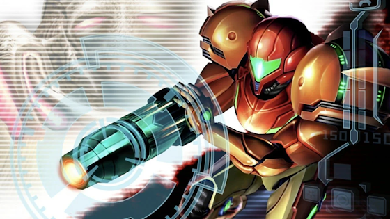
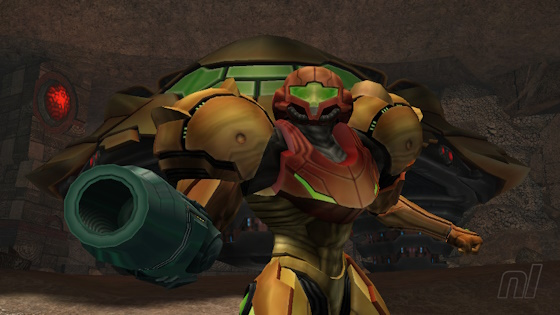
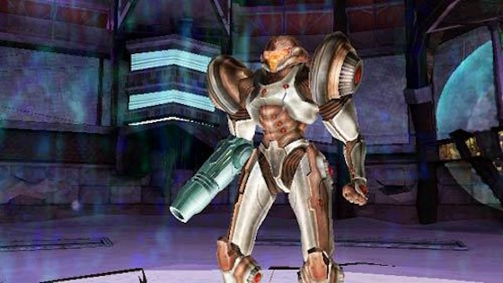
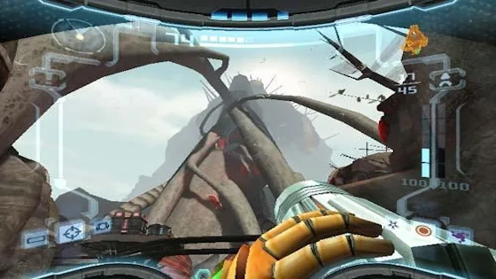
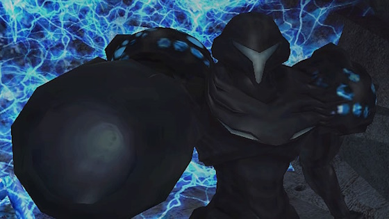

Transcurridos seis meses desde los eventos de Metroid Prime, Samus Aran ha sido contratada por la Federación Galáctica para investigar la desaparición de un grupo de soldados en el planeta Aether y prestarles ayuda si es necesario. Samus acepta la misión, sin embargo al entrar en la atmósfera del planeta su nave es dañada por una tormenta eléctrica. Samus aterriza cerca de las últimas coordenadas de los soldados y comienza a explorar los alrededores para buscar supervivientes. No muy lejos del lugar de aterrizaje, cuando exploraba una caverna, encuentra un portal interdimensional.
|  |  |  |  |  |